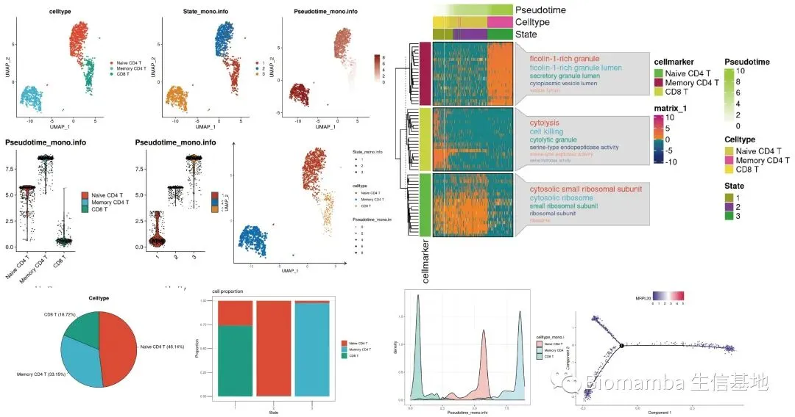

一文搞定拟时序分析的下游可视化探索
原文：https://mp.weixin.qq.com/s?__biz=MzAwMzIzOTk5OQ==&mid=2247494479&idx=1&sn=32f39c79c4c9fc07aa829eed49016da3&chksm=9b3c921fac4b1b091efcdd151500b69d19f71d5ca518122af697fc37e87acd915f3be5f63fb8#rd 合集：单细胞教程全收录

订阅合辑

 订阅功能已经开了有一段时间了，这是一个付费合辑，文末可解锁资料的下载链接，并且付费一篇即可自动解锁 后续合辑中的其他推送，考虑到不会发很多付费推送，偶尔发两篇付费内容也是为了让大家尊重我的劳动，这个合辑已经出到第三篇了，共包含了一百多个学习文件 ，可以说是白菜价了。请各位请理性消费 ，看看合辑中的内容，用得到的时候再解锁！ -Biomamba
订阅功能已经开了有一段时间了，这是一个付费合辑，文末可解锁资料的下载链接，并且付费一篇即可自动解锁 后续合辑中的其他推送，考虑到不会发很多付费推送，偶尔发两篇付费内容也是为了让大家尊重我的劳动，这个合辑已经出到第三篇了，共包含了一百多个学习文件 ，可以说是白菜价了。请各位请理性消费 ，看看合辑中的内容，用得到的时候再解锁！ -Biomamba

一、写在前面：

前面我们已经花了11个视频 以及超过四个小时 的时间，以monocle2和monocle3为例给大家介绍了拟时序分析的主要流程，但是很多同学还是反馈不知道如何对拟时序分析的结果进行生物学解释 从而撰文 ，亦或是不知道如何再进下一步的探索与可视化 。所以这里就给大家出一个教程，带领大家完成一些monocle运行后的探索。
主要是完成这些图表的绘制：

那就意味着你需要先掌握这些内容： 单细胞数据基础分析学习手册拟时序分析系列B站连续播放起来比较方便： https://www.bilibili.com/video/BV1br4y1x7Hf?p=1推送单细胞测序数据进阶分析—《拟时序分析》1.概论 单细胞测序数据进阶分析—《拟时序分析》2.monocle概论单细胞测序数据进阶分析—《拟时序分析》3.monocle2实操：完整版 单细胞测序数据进阶分析—《拟时序分析》4.初识monocle3 单细胞测序数据进阶分析—《拟时序分析》5.monocle3的降维、分群、聚类单细胞测序数据进阶分析—《拟时序分析》6.monocle3的拟时序分析 解决monocle2的orderCells报错的两种方法
二、视频教程：
B站连播更方便：
https://www.bilibili.com/video/BV1br4y1x7Hf?p=12